Reminders
Notifications with a chime at the time you pick: %6pm, %in30m, or from the picker.
Open source · Self-hosted · Local-first
OpenThings is a task manager that runs on your own server. Plan the day, capture ideas in seconds, focus on one thing at a time, and keep the habits that matter, without an account or a subscription.
Free and MIT licensed. The demo keeps everything in your browser. Also on iPhone and as a Mac and Linux app.
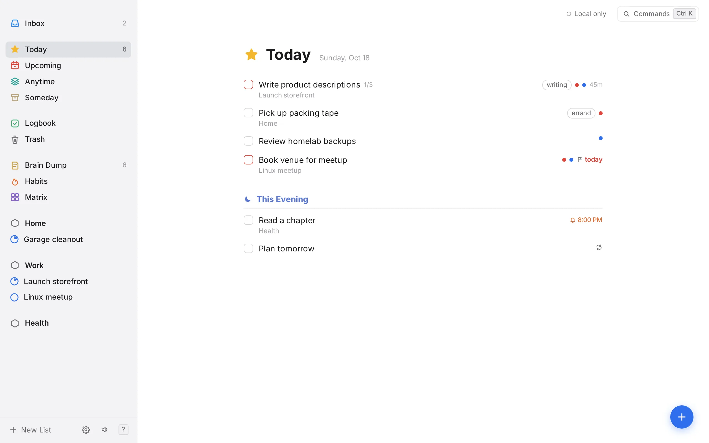
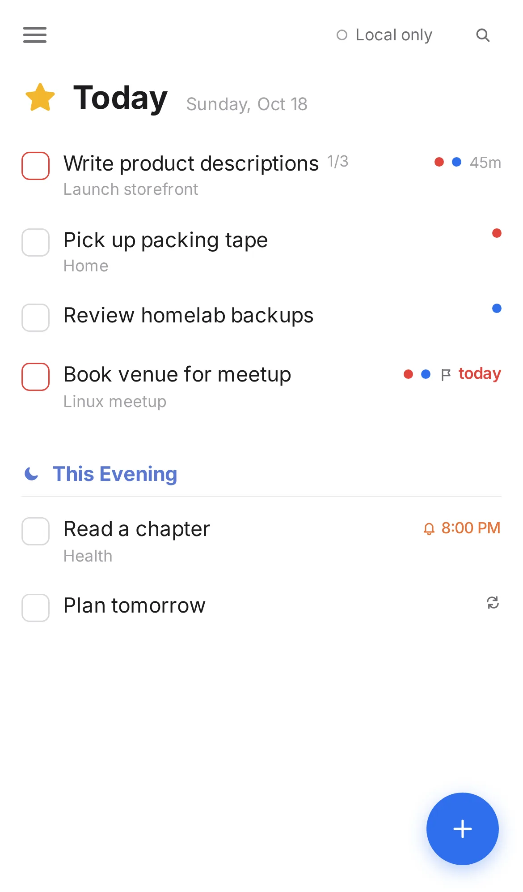
Plan
Today holds what you've chosen to do now, with a quiet This Evening section for later. Upcoming lays out the weeks ahead, and Anytime and Someday keep the rest out of sight until you want it.
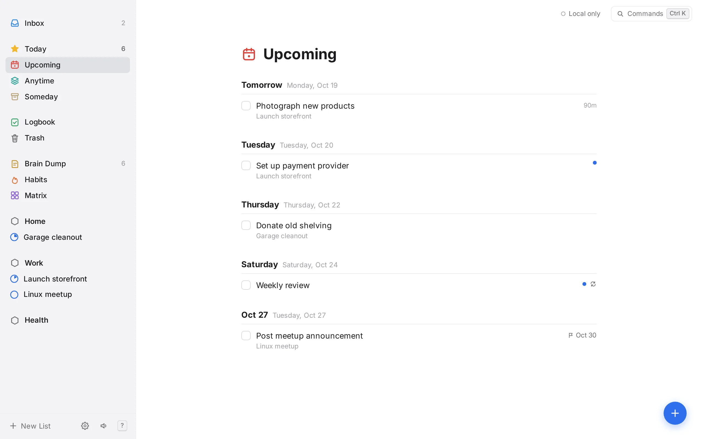
Capture
Press N from any screen and write the whole thing in one line. Short prefixes set the project, date, reminder, deadline, estimate and tags as you type.
+Project @fri %9am !next-week ~2h #shop *weekly
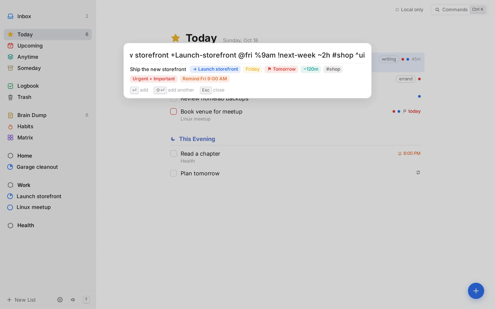
Brain dump
Get the noise out of your head onto something that looks and feels like paper. Each line fades over two days and then disappears, unless you check it off or keep it by moving it to a real list.
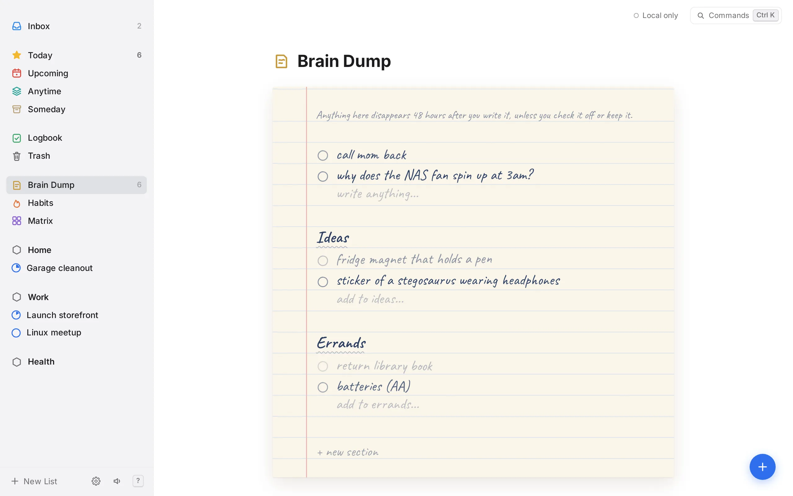
Focus
Select a to-do and press F. Everything else steps back: a Pomodoro ring, the to-do's checklist, and a gentle bell when it's time for a break. Time spent is tracked automatically.
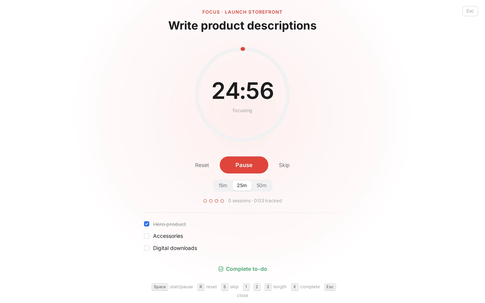
Habits
Every day, weekdays, or five times a week on whichever days work. Streaks follow the schedule you set. Turn any habit into a 30, 60 or 75-day challenge with a clear finish line.
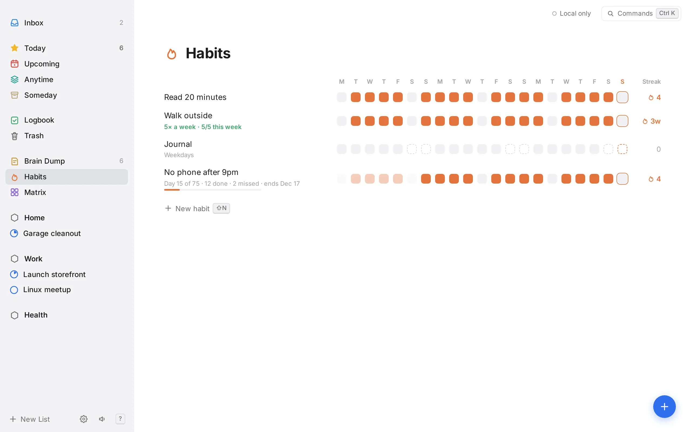
Prioritize
Flag to-dos urgent or important and the matrix sorts them into do, schedule, delegate and drop: a quick check that you're spending the day on the right things.
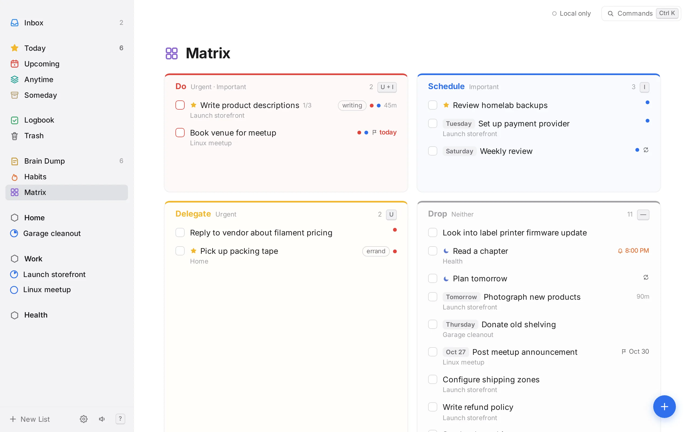
Plan
Drag across the calendar to block out time, then type a few letters to give it an area, a project or a single to-do: veh, Enter, and it's Vehicles. Move blocks between days, stretch them, or look four weeks ahead. Each area keeps its own color.
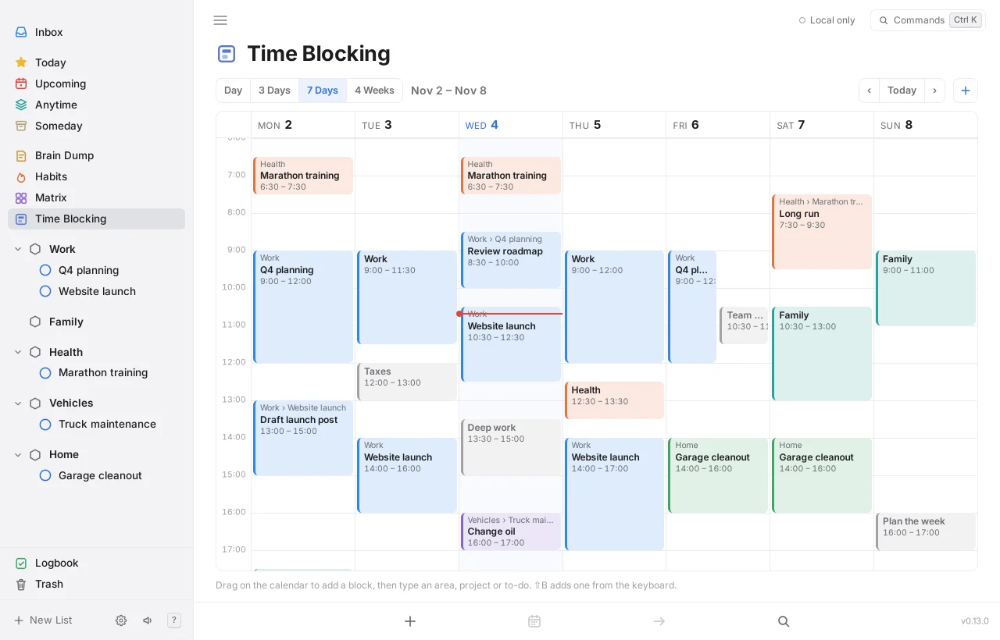
Connect
Your server keeps your phone, laptop and browsers in sync. Each one holds a full copy and works offline; changes merge field by field when it reconnects. The same server has a REST API for scripts and Home Assistant, and an MCP endpoint so Claude and other AI assistants can read your lists and add, move or check off to-dos.
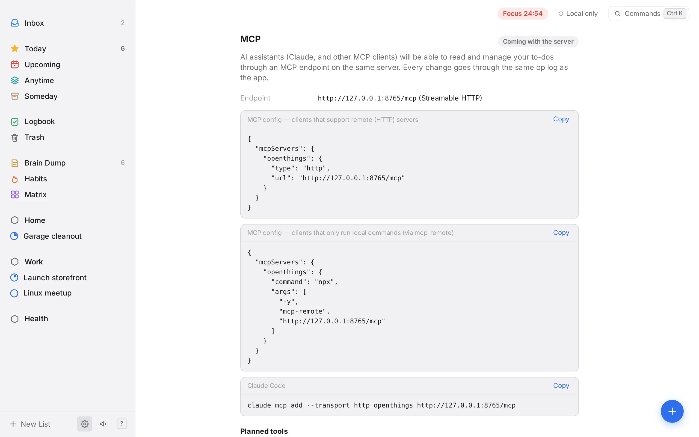
iPhone
The same app on iPhone, with reminders that arrive when it's closed, Home and Lock Screen widgets, a Share Sheet to the Inbox or Brain Dump, and Shortcuts. Say “Add to OpenThings” and Siri asks what to add. Add with the big blue button, swipe right for your lists, and pull down to find anything. To sync, scan the QR code from Settings on your computer.
Not on the App Store yet. You build it with Xcode on a Mac.
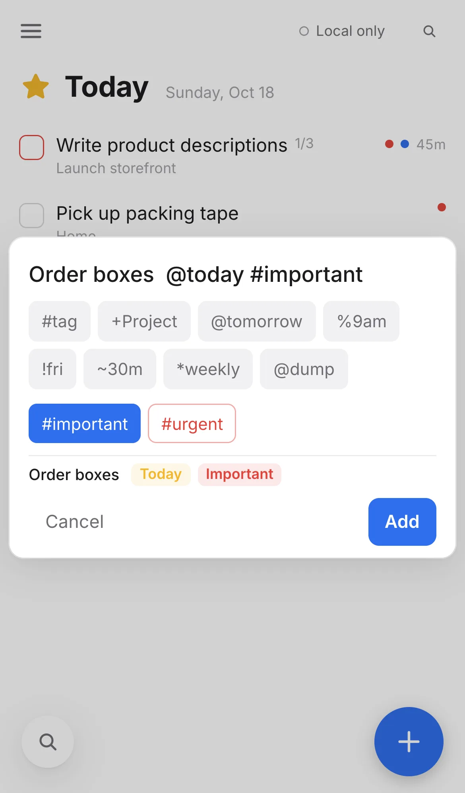
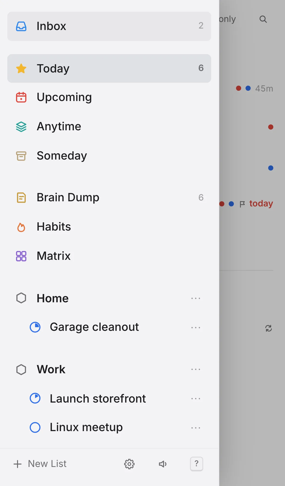
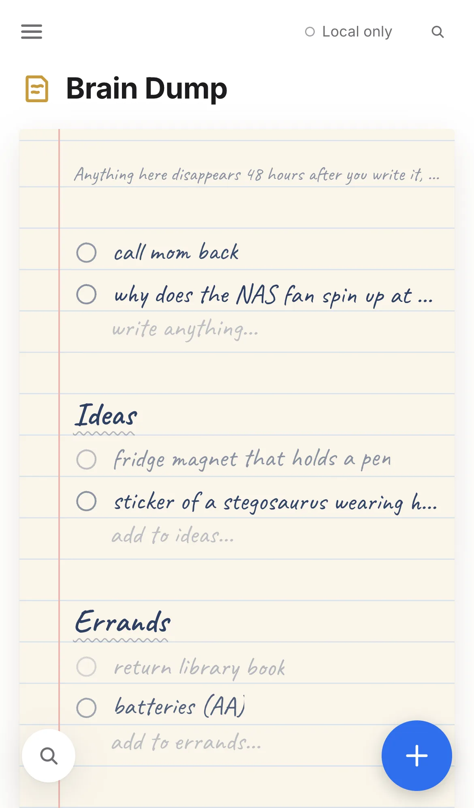
Mac & Linux
The desktop app for macOS and Arch Linux (Omarchy / Hyprland) adds a global shortcut, ⌃Space, that opens a small quick-add window over whatever you're doing. It keeps running in the menu bar, so reminders arrive as native notifications with the window closed. It also brings a real menu bar, launch at login, openthings:// links, and Things 3 import on the Mac.
brew tap spuder/openthings
brew trust spuder/openthings
brew install --cask openthingsOne universal build for Apple silicon and Intel Macs, signed and notarized by Apple. Linux preview builds come from GitHub Actions (sign in to download).
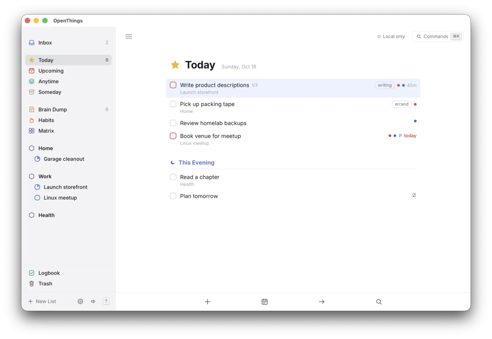
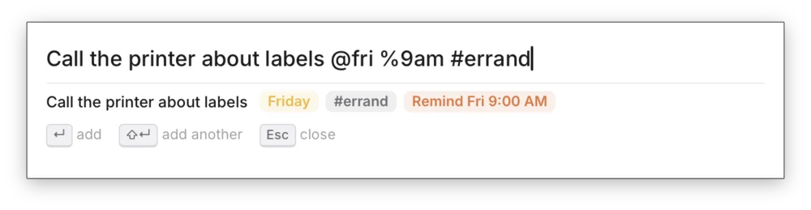
Notifications with a chime at the time you pick: %6pm, %in30m, or from the picker.
Every action has a shortcut, plus a command palette on Ctrl/⌘ K and a cheat sheet on ?.
Soft bell chimes for completing, checking a habit and finishing a focus session. One key to mute.
Deleted to-dos wait 30 days before they're gone, so mistakes are easy to undo.
Follows your system, or pick one. Comfortable either way.
Big touch targets, swipe for your lists, pull down to search, and the keyboard never hides what you're typing. In the browser or as an iPhone app.
Self-hosted
Pull the image and start it. With DockTail on the host, it appears on your tailnet over HTTPS with no ports to open. Images are built for amd64 and arm64.
Set OPENTHINGS_PUBLIC_URL to the address your devices use, such as https://openthings.<tailnet>.ts.net. The web app fills it in for you, and your computer shows it as a QR code that the iPhone app scans to connect.
Local-first by design: every change is stored on your device in SQLite and recorded in a change log, which the container syncs between your devices. It also serves a REST API and MCP endpoint.
services:
openthings:
image: ghcr.io/spuder/openthings:latest
restart: unless-stopped
environment:
TZ: America/Denver
# the address your devices use
OPENTHINGS_PUBLIC_URL: https://openthings.example.ts.net
volumes:
- openthings-data:/data
labels:
- "docktail.service.enable=true"
- "docktail.service.name=openthings"
- "docktail.service.port=8080"
- "docktail.service.service-port=443"
volumes:
openthings-data:docker compose up -dOpenThings is a working proof of concept. These are being built in the open.
Notifications pushed by your server, so they arrive in the browser even with the app closed. Plus device tokens for the API.
Time blocking is here, and other calendars can subscribe to it. Next: drag to-dos into blocks and see your other calendars' events beside them.
The iPhone app runs today; App Store next. Android is coming and needs testers.
The Mac and Arch Linux app works today; the AUR is next.
No sign-up. Your data stays in your browser until you connect your own server.